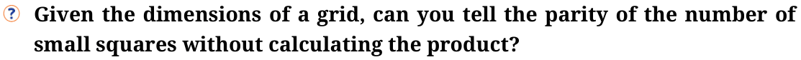
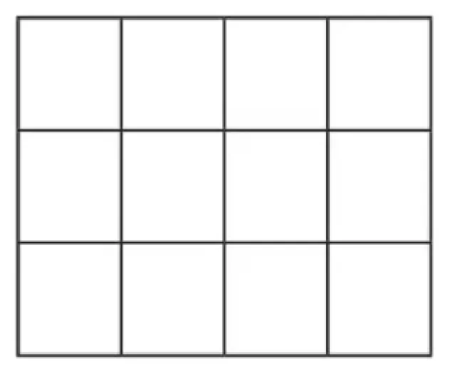
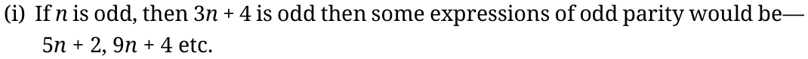
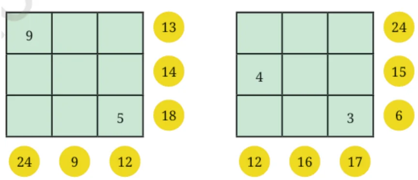
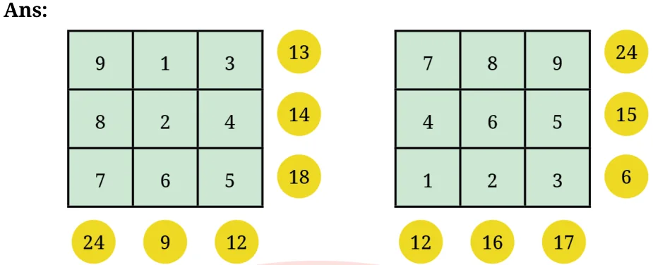

Figure it out
- Using your understanding of the pictorial representation of odd and even numbers, find out the parity of the following sums:
- Sum of 2 even numbers and 2 odd numbers (e.g., even + even + odd + odd) — Even number
- Sum of 2 odd numbers and 3 even numbers — Even number
- Sum of 5 even numbers — Even number
- Sum of 8 odd numbers — Even number
- Lakpa has an odd number of ₹1 coins, an odd number of ₹5 coins and an even number of ₹10 coins in his piggy bank. He calculated the total and got ₹205. Did he make a mistake? If he did, explain why. If he didn’t, how many coins of each type could he have?
Lakpa must have made a mistake!
The total can never be ₹205 with the given coin counts. - We know that:
- even + even = even
- odd + odd = even
- even + odd = odd
Similarly, find out the parity for the scenarios below:
- even − even = Even
- odd − odd = Even
- even − odd = Odd
- odd − even = Odd


The parity of the number of small squares in a grid (with \(m\) rows and \(n\) columns) is:
- Even, if at least one of the numbers (either \(m\) or \(n\)) is even.
- Odd, if both numbers (\(m\) and \(n\)) are odd.
- Even, if both numbers (\(m\) and \(n\)) are even.
Find the parity of the number of small squares in these grids:
- \(27 \times 13\) — Odd
- \(42 \times 78\) — Even
- \(135 \times 654\) — Even
Come up with an expression that always has odd parity: Some such expressions are \(2m + 1\), \(8a + 3\); \(4n + 3\), \(6n + 5\) etc.
Come up with other expressions, like \(3n + 4\), which could have either odd or even parity.

Some expressions of even parity — \(2n + 4\), \(4n + 6\) etc.
(ii) If \(n\) is even, then \(3n + 4\) is even then all expression will be even parity — \((5n - 2)\), \(n + 4\) etc.
Are there expressions using which we can list all odd numbers? \(2n - 1\) is the expression that can list all odd numbers.
What would be the \(n^{\text{th}}\) term for multiples of 2? Or, what is the \(n^{\text{th}}\) even number? \(2n\).
Fill the grids below based on the rule mentioned above:


Try to find out other possible ways.